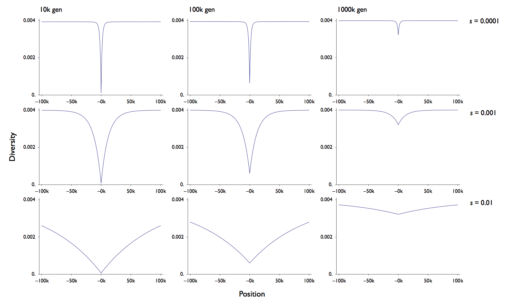
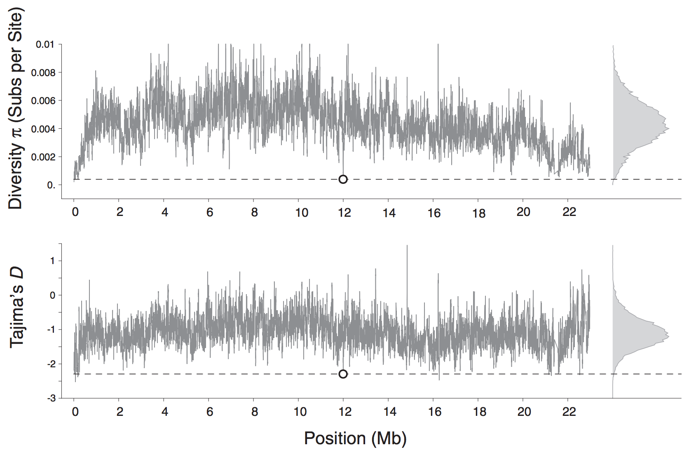
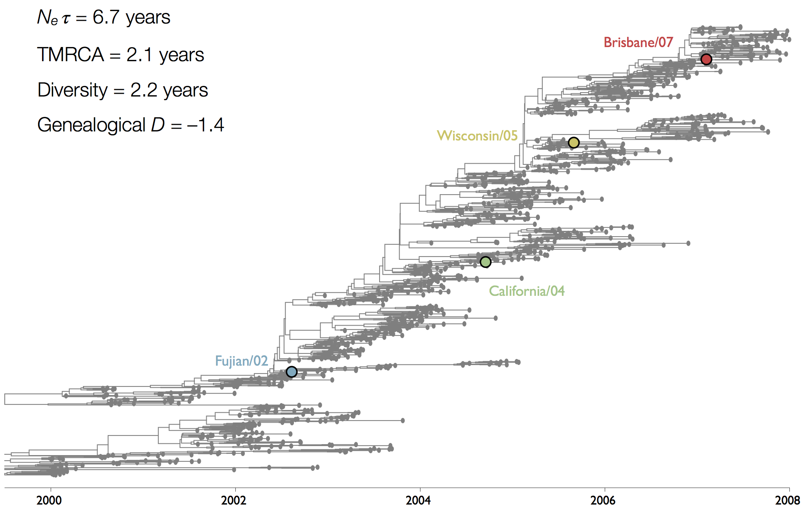
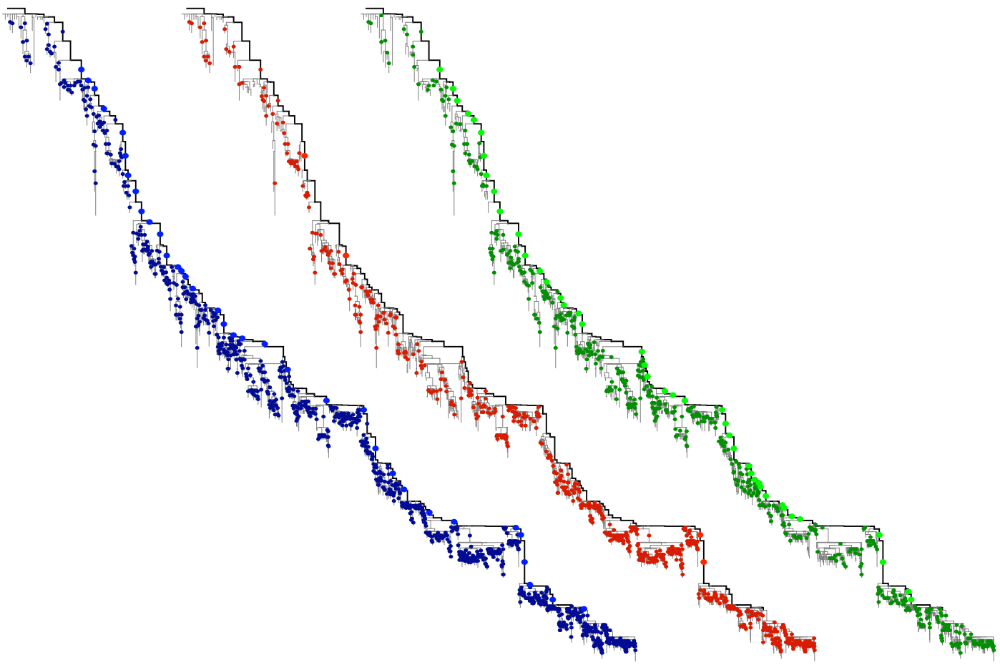

1. Tests of diversity / tree shape
2. Tests of rates
Test: is there less genetic diversity than expected?
Influenza phylogeny and effective number of infections

Coalescent rates in flu and measles

Selective sweeps purge nearby diversity

Depth and breadth indicates age and strength of sweep

Selective sweeps purge diversity in Drosophila

Test: is the tree shape different from the neutral expectation?
Tajima's D statistic summarizes deviation from neutrality

Influenza has negative Tajima's D

Test: is there an overabundance of fixed non-synonymous mutations?
"Trunk" branches show an excess of non-synonymous change at epitope sites in influenza

Abundance of green epitope mutations on phylogeny trunk, relative to blue synonymous and red non-epitope mutations

Can be extended to look at relationship between mutations and clade growth